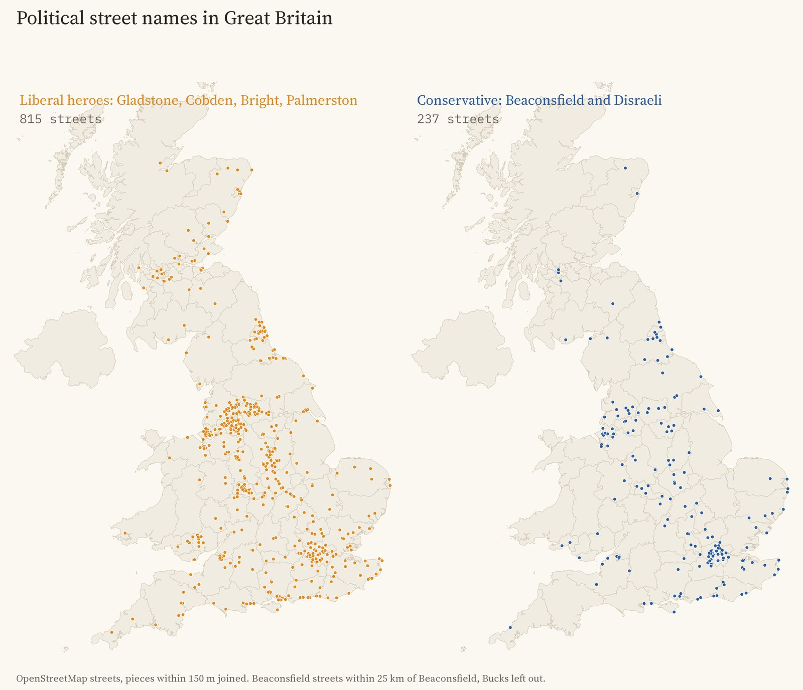
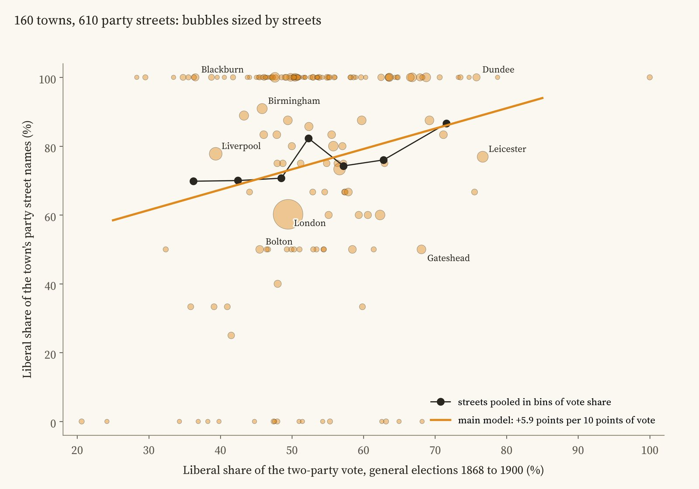
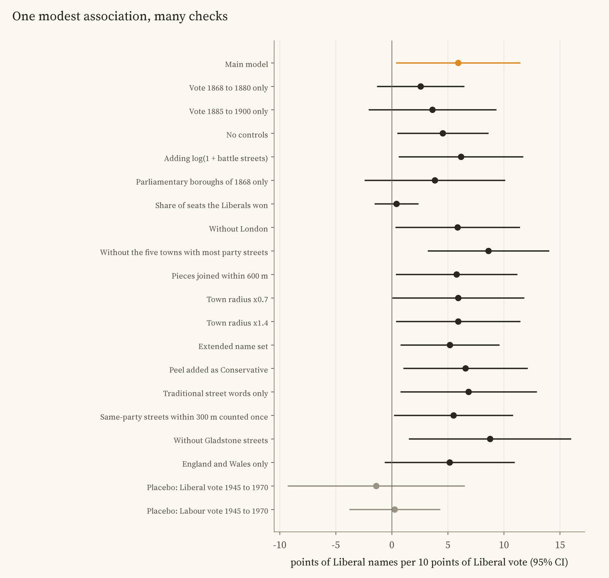
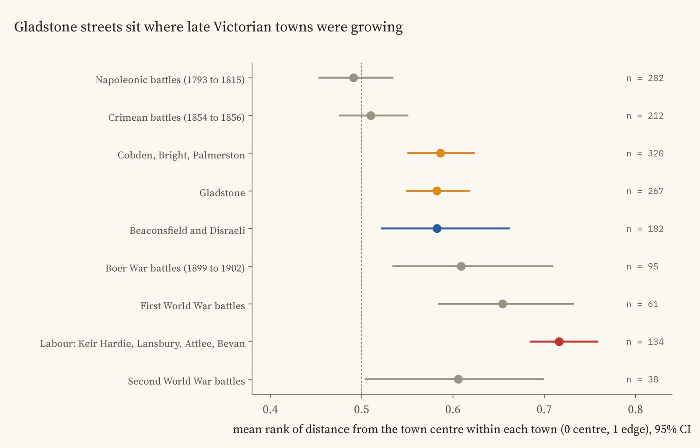
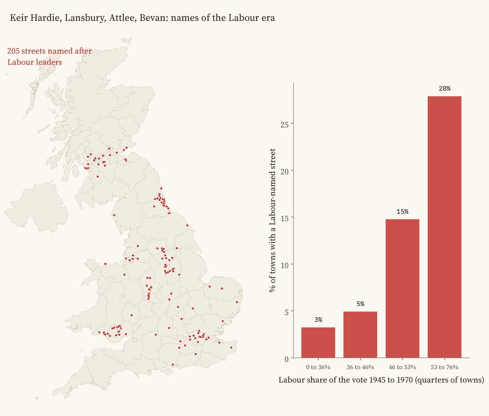
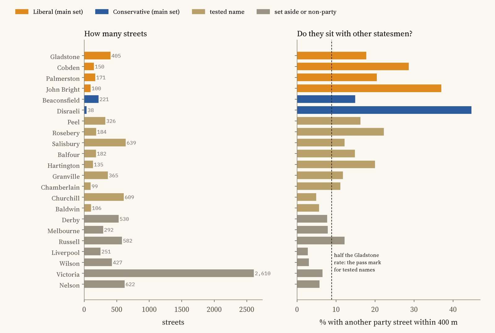

Every street in Britain named after a Victorian statesman, coloured by party, and every town circled by how it voted from 1868 to 1900. Tap a street or a town.
Walk through almost any Victorian town in Britain and you will find a Gladstone Street. Builders and councils named new streets after the statesmen of the day: Gladstone and Disraeli, the free traders Cobden and Bright, Palmerston. So here is a question you can answer from a street map: did Liberal towns name their streets after Liberals, and Conservative towns after Disraeli?
I took every street in OpenStreetMap whose name contains a politician's or a Victorian hero's name, joined the pieces of each street, and sorted the names with care, because many statesmen's titles are also places. A Derby Road usually goes to Derby. Then I matched 160 towns to the general election results of the seats named after them, from 1868 to 1900.
The first answer is lopsided. There are 405 Gladstone streets, 150 named after Richard Cobden, 171 after Palmerston and 100 after John Bright. On the Conservative side there are 221 Beaconsfields (Disraeli's title from 1876) and just 38 Disraelis. Of all the party names, 77% are Liberal, about 3.4 for every Conservative one.

Party street names: Liberal on the left, Conservative on the right.
That is not because Britain voted Liberal three to one. In the towns studied the average Liberal share of the vote was 53%. Liberal heroes were named on streets in Tory towns too: Blackburn, which voted only 37% Liberal, has 5 Liberal party names and no Conservative ones. Cobden and Bright were Lancashire's own heroes, whatever the town's politics. The exception is London, with 41 Conservative names against 62 Liberal ones.
A little. Comparing towns within the same region, each 10 points more Liberal vote goes with 5.9 points more Liberal names (the 95% range is 0.4 to 11.4). A town 20 points more Liberal had roughly 12 points more of its political streets named after Liberals. Leicester, 77% Liberal, has 10 Liberal names and 3 Conservative; Liverpool, 39% Liberal, has 14 and 4.

Each bubble is a town, sized by its party streets. The orange line is the main model's slope.
I wrote down the test and its checks before running it, and the result is fragile in honest ways. It holds when any one region is left out, without London, with different rules for joining streets and drawing town edges, and when streets named together in one batch are counted once. Shuffling the vote shares between towns in the same region produces a link as strong only 38 times in 2,000. But it is no longer clear if every town counts equally regardless of how many streets it has, and it vanishes if I use the share of seats the Liberals won instead of their share of the vote. Most of it comes from Beaconsfield streets, which are rarer in Liberal towns; the few Disraeli streets show no pattern either way.

The main estimate and every check, with 95% ranges.
The best test is a placebo. If the names simply reflected a town's lasting political character, the vote of 1945 to 1970 should predict them too, since left-leaning towns tended to stay that way. It does not: the Labour vote of those years gives 0.3 points per 10 and the Liberal vote -1.4, both close to zero. That fits names that followed the politics of their own time, though the later numbers are too uncertain to prove it.
Battle street names give a rough clock: streets named after Crimean battles were mostly laid out in the 1850s, Boer War streets around 1900. Ranked by distance from the centre within their own towns, Gladstone streets sit at 0.58 on a scale from 0 (the centre) to 1 (the edge), where you would expect for streets of the late Victorian decades: beyond the Crimean streets (0.51) and inside the Boer War ones (0.61). Beaconsfield streets sit at the same place (0.58). Labour names are farther out still (0.72).

Where each group of streets sits within its town, with 95% ranges.
There are 205 streets named after Labour leaders, mostly in the coalfields of South Wales, Durham and central Scotland and in East London, where 14 of the 85 Lansbury streets are. 28% of the most Labour quarter of towns have one, against 3% of the least Labour quarter: a pattern that points the same way, though with so few streets it is suggestive rather than proven.

Labour names, and the share of towns with one by Labour vote 1945 to 1970.
Streets. 28,029 OpenStreetMap roads whose names contain one of 59 commemorative words, with bus stops and footpaths left out. Pieces of one street within 150 m were joined, giving 15,593 streets.

How many streets carry each name, and how often they sit near another statesman's street.
Names. Victorian builders often named a group of streets together after the statesmen of the day, so a real political name tends to have another one nearby. 18% of Gladstone streets have another party street within 400 m, against 3% for Liverpool Road, which mostly leads to Liverpool. I set the pass mark at half the Gladstone rate before running anything. Salisbury, Peel, Rosebery, Balfour and a few others pass, but they are also places and surnames, so the main test uses only the unmistakable names; adding the others changes little.
Votes. Each town is linked to the seats named after it (Leeds, Leeds Central, East Bradford), and its Liberal share is the Liberal part of the Liberal and Conservative vote at general elections from 1868 to 1900, with Liberal Unionists counted as Conservatives. The models compare towns in the same region, with standard errors that allow for streets in one town being alike.
What this cannot say. It cannot say who chose any name or why: a builder, a landowner or a council. Streets that were renamed or cleared since are missing. Towns are drawn around their centres by distance, and the vote is the vote of the seats named after the town, which did not always match the built-up area. It is a pattern across towns, not proof that voting caused naming.